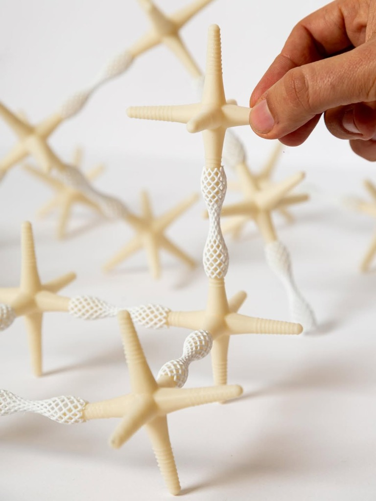
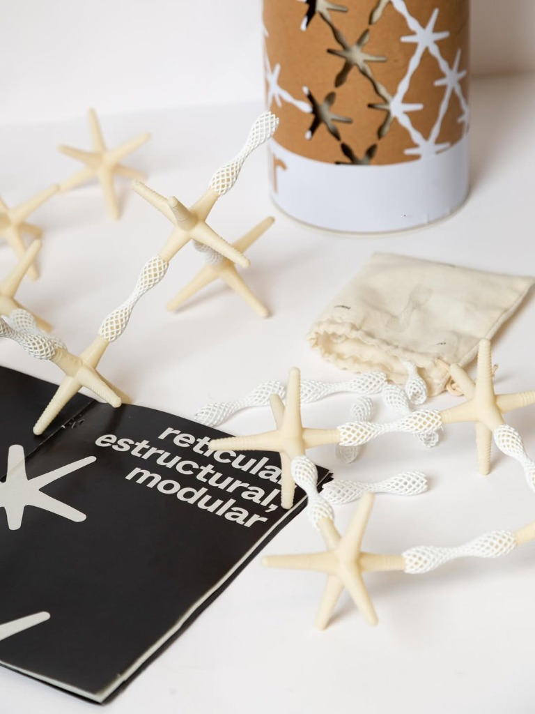
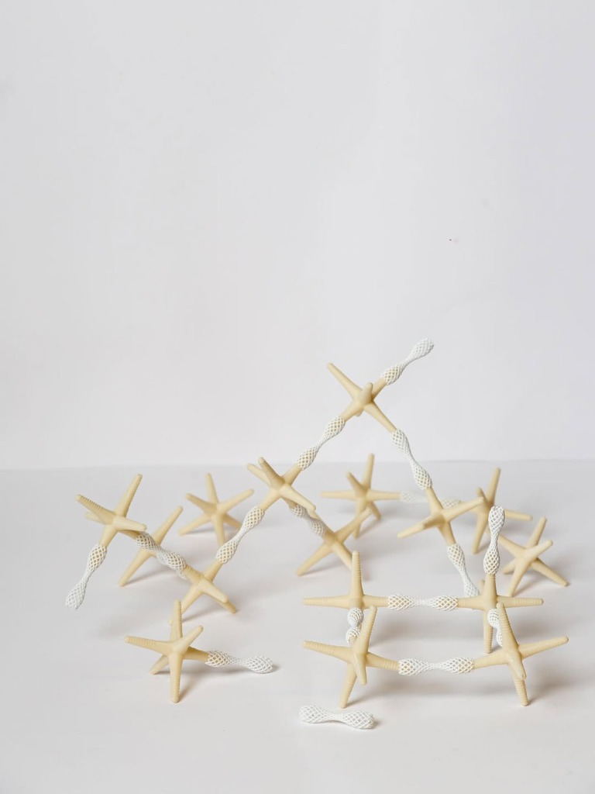

Diseño de Producto y Packaging
Espicular
Sobre el proyecto
Un juego de construcción modular
El diseño integral de juego de construcción modular, sistema de packaging cilíndrico y manual de ensamble inspirado en la bioestructura de la esponja de cristal marina.

